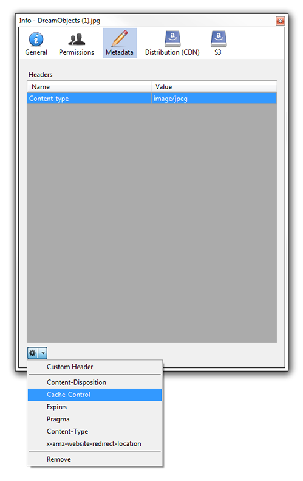

Numbered lists
Manually type the number in
Either collapse your User object, or scroll to the bottom of your expanded User object to find the User Controls.
- Click the Add Key button.
A drop-down list appears allowing you to choose S3 or Swift:

- Select either S3 or Swift.
- If you select S3, proceed to Step 5.
- If you select Swift, an additional field appears indicating that you must create a Sub-user name. DreamObjects Sub-users have full control, and are used in combination with the Secret Key to obtain a Swift token for future access.
Enter a Sub-user name.
- Click the Add Access Key button.
An Access Key is added.
Second way to add
Open Cyberduck and select a file.
Click the Get Info button.
Select the ‘Metadata’ option.
Select the dropdown option to the bottom left and choose ‘Cache-Control’.

Modify Cache-Control or add a new custom header.